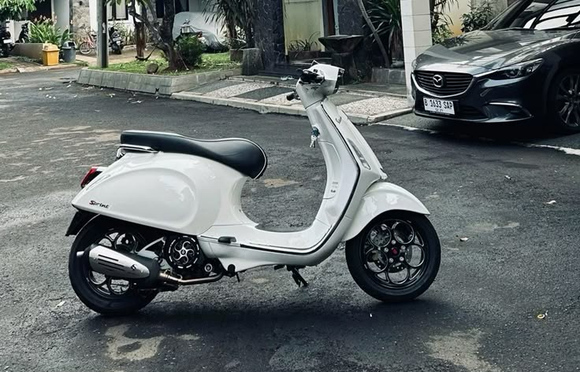

Pesona Vespa matic di malam hari
Bayangkan anda keluar ke jalanan menggunakan Vespa!!!
Bagaimana Vespa mengubah pandangan kamu terhadap kendaraan roda dua.

Cerita vespa Menjadi raja kendaraan roda dua(menurut kamu).
Pilih kategori atau jelajahi ragam tipe Vespa ikonik dari era 2-Tak hingga Modern Matic.
Sensasi mesin kanan, aroma oli samping, dan transmisi manual stang yang legendaris.
Teknologi i-Get 4-tak modern, pengereman ABS, performa halus dan gaya urban masa kini.
Tempat kumpul dan jadwal Sunmori.
Kopi Jalanan Corner - Buka setiap malam akhir pekan.